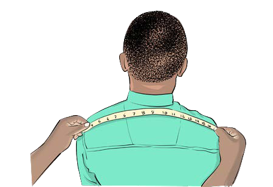

Multiplication of decimals by decimals
Activity 1
Measurements of shirt

Steps
1.
Use tape measure to measure across the front of the shirt, from one armpit to the other.
Then multiply that number by 2, to get the full chest size.
2.
Measure the shoulder width, measure straight across from one shoulder seam to the other.
3.
Measure the sleeve length, start at the top of the shoulder seam.
Measure all the way down to the end of the sleeve (follow the curve according to the sleeve).
4.
Measure the shirt length, measure from the highest point on the shoulder (near the collar) down to the bottom waist.
5.
Measure the neck size, measure from the middle button of collar to the end of the buttonhole.
6.
Measure the waist, measure straight across the narrowest part of the shirt (usually 6–8 inches below the armpits).
7.
Measure the cuff, wrap the tape around the cuff to get the circumference.
8.
Record the measurements from step 1 to 7.
9.
How much fabric do you need to sew that shirt?